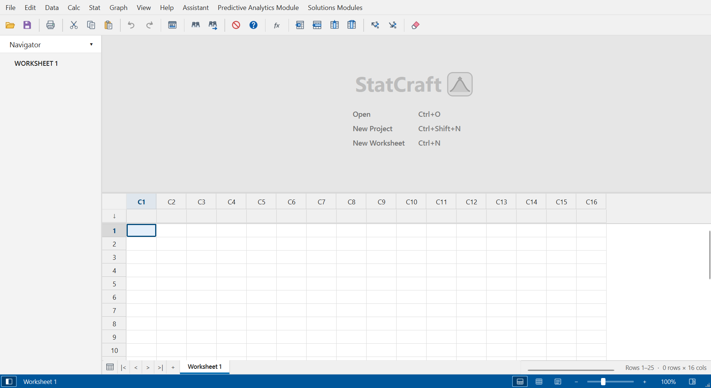
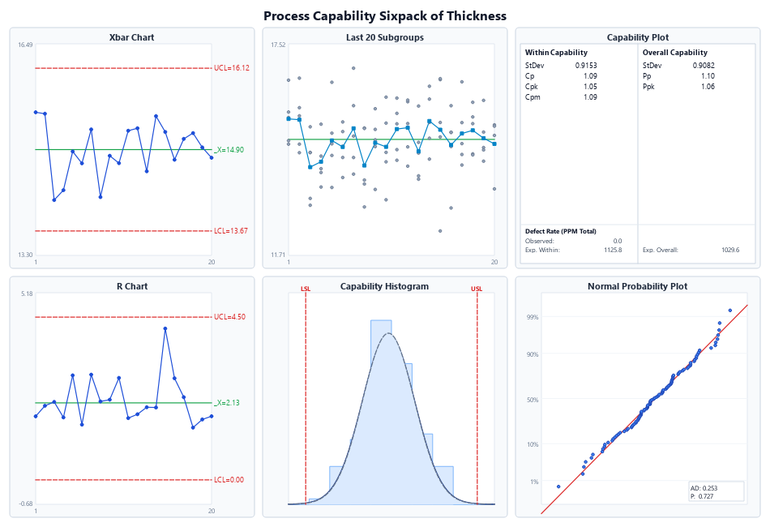

Say goodbye to costly subscriptions and slow Java runtimes. StatCraft provides complete Minitab 22 file & formula parity with instant native startup, advanced DOE, and publication-grade charts.

Engineered for Rigorous Industrial & Academic Workflows
Everything Six Sigma black belts, quality engineers, and research scientists expect from enterprise statistical packages.
Open and save legacy Minitab worksheets, projects, and workbooks seamlessly. Import and export CSV, Excel, Parquet, and ODS formats with zero data loss.
Design and analyze 2-level Factorial, Fractional, Response Surface (Central Composite & Box-Behnken), Dynamic Taguchi, Mixture, and Response Optimization.
Industry-standard SPC control charts (Xbar-R, Xbar-S, I-MR), Normal & Non-normal capability metrics (Cp, Cpk, Pp, Ppk), and Gage R&R ANOVA nested studies.
Render beautiful interactive 2D and 3D wireframe plots, contour slices, Pareto charts, multi-vari plots, and boxplots. Export instantly to vector PDF, PNG, DOCX, or PPTX.
StatCraft runs natively on Windows 10/11, macOS (Intel & Apple Silicon M1/M2/M3), and Linux x86_64. No Electron overhead, no web latency, pure Qt responsiveness.
Your proprietary research and production data never touches a third-party cloud. Fully air-gapped support with silent MSI/portable enterprise deployments.
Precision Analysis in Action
Explore actual screenshots generated directly from our verified test suite and production builds.

Why Engineers are Switching to StatCraft
| Feature | StatCraft | Legacy Minitab® | JMP® (SAS) | Cloud Web Apps |
|---|---|---|---|---|
| License & Cost | Free & Open Source ($0) | $2,400+ / yr | $1,850+ / yr | Monthly Subscriptions |
| Cross-Platform OS | Windows, macOS & Linux | Windows (Mac Cloud) | Windows, macOS | Browser Only |
| Cold Startup Time | < 0.2s (Native Core) | 12 – 25 seconds | 8 – 15 seconds | Network Dependent |
| File Compatibility | .MPX, .MTW, .JMP, CSV, Excel | .MPX, .MTW | .JMP | Proprietary / CSV |
| Offline Air-gapped Use | 100% Offline (Zero Telemetry) | License Server Required | License Server Required | Impossible (Cloud Only) |
| DOE & Response Optimizer | Included Full Suite | Included | Included (JMP Pro for some) | Limited / Paid Add-on |
What's New in StatCraft
Loading live release highlights from GitHub...
Installation in Under 60 Seconds
Run the guided GUI Setup installer or run the standalone portable `.exe` directly without administrative rights.
Download the `.zip` archive, extract `StatCraft.app`, and drag it directly to your Applications folder.
Extract the standalone `.tar.gz` archive. Includes desktop icon and launcher for Ubuntu, Debian, Fedora, and Arch.